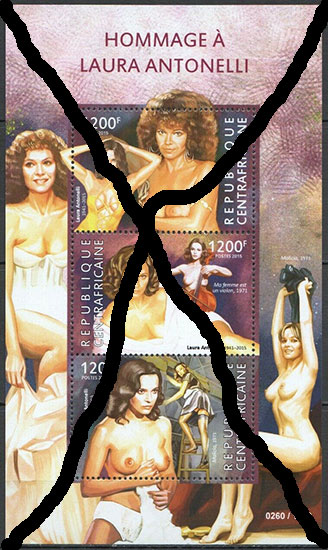
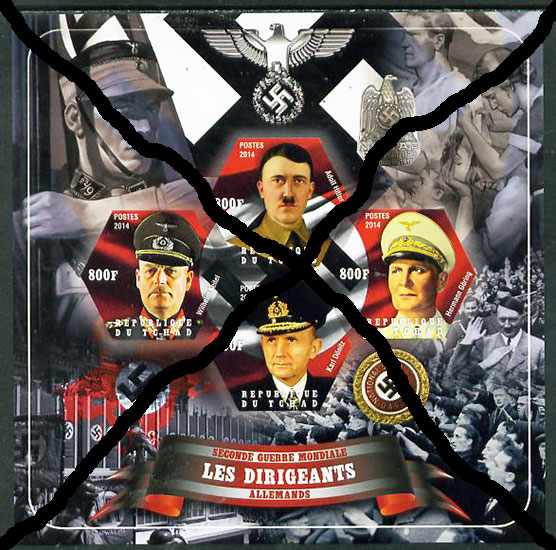
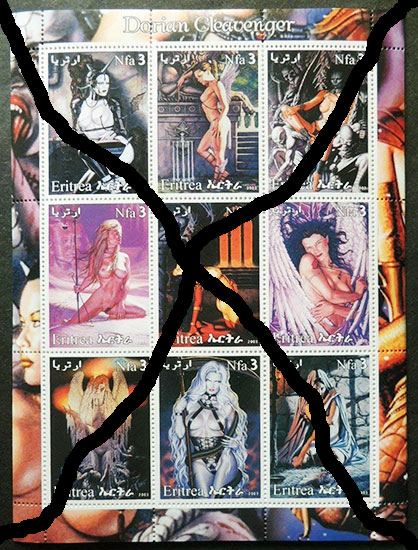
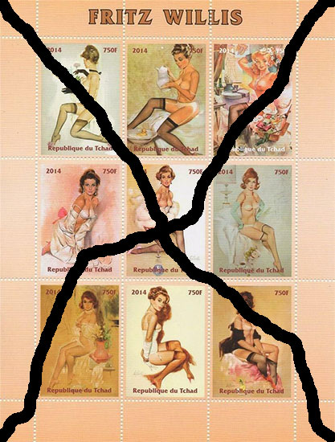
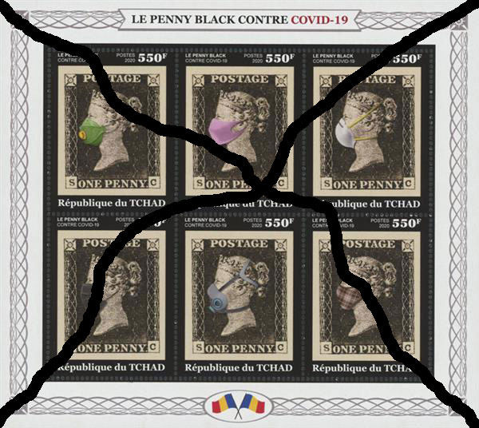

Safeguard the Postal Stamps
Championing the cause to safeguard
the postage stamps of UPU member countries
Foreword from the PWO
Mrs. Olfa Mokkadem took office as Head of the program "Philately and CRI” at the International Bureau of the UPU on Feb. 7, 2017. Source .
Director-Generalof the UPU, Mr. Bishar Abdirahman Hussein, was elected on Oct. 10, 2012 and reelected in 2016. The new Director-General, Masahiko Metoki of Japan, was elected at the Universal Postal Congress in Abidjan, Côte d'Ivoire, for the next cycle of four years.
Unfortunately, it can be said that Ms. Mokkadem and Mr. Hussein have shown great passivity in the current catastrophic situation of illegal and abusive stamps, mentioned in the letter published below. Here they are on this official UPU photo. Hopefully, one day Mr. Metoki will read this letter and, together with Mrs. Mokkadem, will be more active in fighting the illegal and abusive stamps...
Note. We inserted some images of illegal stamps mentioned in the letter to show how they really look like. Warning: these are not valid postal stamps and therefore stay away from this worldwide pest.
To the attention of Mrs. Mokaddem and of Mr. Ducrest, officials responsible for philately at the UPU Secretariat, Berne (Switzerland).
This message is a follow-up to our previous correspondence of May 26, which has unfortunately remained unanswered to date, on the subject of "urgent measures required in the field of philately, and preparations for the next UPU Congress." Although this present message is rather long, the matter is urgent.
In our capacity as philatelic partners of the UPU, we are taking the liberty of communicating to you our concerns regarding the current state of philately and postage stamps. The urgent need to take actions against the continued proliferation of illegal “postage stamps” is even more meaningful when one considers the significant contribution postage stamps have made to cultural and economic development worldwide. Safeguarding the integrity of the Universal Postal Union itself, as well as the sovereignty of its member countries through their postage stamps, are at stake. Additionally, we hope that philatelic issues have been effectively included in the agenda of this Universal Postal Congress in Abidjan and that our concerns can still be taken into consideration.
Such a historic event as that of the first Universal Postal Congress in sub-Saharan Africa justifies that the development and history of Africa are also highlighted through its postage stamps. Indeed, it is appropriate, on this occasion, to recall the key role played by the postage stamp, for almost two hundred years, and not only as an important source of income for the economic and postal development of the African continent. Furthermore, it is as much as an official symbol of the sovereignty of its issuing nation, "as a roving ambassador", that the postage stamp has widely disseminated, even to the most remote corners of the planet, as the best of the assets, identity and cultural heritage of African countries.

It is also worth remembering, on this occasion, the strength of the official postage stamp which, as a communications and trade facilitator, has given rise to a multitude of activities and key partners which continue to provide added value, both for the postal sector and for the country as a whole. They are, among others, artists and graphic designers; philatelic associations, clubs and organizations; libraries; collectors; stamp exhibitions and fairs; manufacturers of philatelic equipment, materials and products; historians and philatelists; security printers; postage stamp auction houses; museums; internet traders and sellers; the philatelic press; promoters of culture, education, tourism, etc. Various philatelic libraries and communication museums showcase the history of their country, the world, and the African continent through postage stamps in their collections. In this regard, Africa's best-known philatelic gem is a famous pair of postage stamps, unique in the world, which were issued in 1847 for the Mauritius Post Office (a red Penny - orange and a blue Two Pence). This pair was sold internationally for $ 4million (£ 3.1million).
Notwithstanding the far-reaching contribution of the postage stamp to the cultural, economic, and social development of the world, there are those postal administrations which question the importance of continuing to produce postage stamps whose incomes are declining in comparison with the increase in incomes from other areas of postal activity, such as those linked with the development of the digital, electronic, financial, and physical networks. Nonetheless, it needs to be stressed that the postage stamp is not a purely postal product, but that it is, above all, a product, an official "symbol" of the sovereignty of its country of issue, just like the currency of the same country. The Post Office is responsible for producing and promoting the postage stamps of its country according to the annual issuance program approved by its government, while ensuring strict compliance with the regulations in force to ensure the integrity and security of the postage stamp for the good of the country.
If the expected income from official postage stamps is in regular decline in various postal administrations, in general, how can we explain, then, that we are witnessing a constant increase, year after year, and this for more than twenty years now, in the number of illegal “postage stamps”, as well as those identified as “abusive”, that are produced in the name of most developing countries and sold on hundreds of Internet sites. Whether they are abusive or illegal productions, such “postage stamps” meet a sustained demand from tens of millions of collectors around the world who seek to obtain any postage stamps on their favorite theme, even if the name of the country is not part of the description, and even if the authenticity of the postage stamp is not confirmed. Unfortunately, there are postal designated operators who allow the production of abusive postage stamps on behalf of their country by means of a contract with an outside company. A representative from one of these countries was quoted in a news article published in 2020 as saying, “There is a buyer who wants to buy this kind of postage stamp. There is a seller who wants to sell it. So where is the problem?”

The seller of the illegal "sheetlet", "106620 MADAGASCAR 2020 KENNEDY & MARILYN - set of PROGRESSIVE PROOFS", for the price of US $ 79.66, added the following message to the back of said "sheetlet", namely, "Numerous new issues are appearing each month, many of which are unofficial or illegal. That is to say, they are privately produced and do not have any postal validity. They are invariably printed to very high standards and aimed at the thematic collector. Some will find their way into thematic catalogues, but their true status may take several years to be established. The item listed here is likely to be unofficial but is offered for the benefit of the topical collector." Other sellers justify the sale of illegal "postage stamps" because they respond to a demand from collectors, although it is an illegal production and has no postal validity. It is also mentioned that "even if such “postage stamps” are not recognized by the UPU, but because they exist, this makes them sought after as collector's items."
To get a better idea of the scope of the sales, a few examples follow of bulk sales where illegal “postage stamps” are sometimes mixed with those labeled “abusive”. Note that this is only a small sample of this type of sales. The total price of the lots sold described below amounts to US$-49,191.00. Undoubtedly, most developing countries would be interested in knowing the prices and quantities sold on their behalf, both of illegal “postage stamps” and of those labeled “abusive”.
.- 14 lots sold (4 still available) for US$-405.00 the lot of a collection of 1006 miniature sheets and souvenir sheets on various themes. (Total of this sale: US$-5,670.00);
.- 25 lots sold (more than 10 lots still available) for US$-195.00 the lot of a collection of 600 miniature sheets and and souvenir sheets on the theme of painting. (Total of this sale: US$-4,875.00);
.- 69 lots sold (more than 10 lots still available) for US$-164.90 the lot of a collection of 1,500 new sheetlets and other pre-canceled ones from different years on various themes. (Total of this sale: US$-11,378.10);
.- 84 lots sold (more than 10 lots still available) for US$-59.90 the lot of a collection of 500 new sheetlets and other pre-canceled ones for the year 2019 on various themes. (Total of this sale: US$-5,031.60);
.- 151 lots sold (7 lots still available) for US$-42.90 the lot of a collection of 360 pre-canceled sheetlets for the year 2020 on various themes. (Total of this sale: US$-6,477.90);
.- 121 lots sold (9 lots still available) for US$-39.90 the lot of a collection of 350 sheetlets for the year 2020 on various themes. (Total of this sale: US$-4,827.90);
.- 3,123 lots sold for US$-3.50 per lot. Each lot was made up of at least eight “miniature sheets” or “souvenir sheets” on various themes (according to the last update recorded on May 28, 2021). (Total of this sale: US$-10,930.50).
It should be noted that the majority of sellers of illegal "postage stamps" use the postal service to ship their orders by registered mail to many countries around the world. One seller specifies that he incorporates the postal tracking system for priority registered items. Another seller adds that he is working with the Post Office to ensure that all his shipments leave with the R code and a tracking number. EMS courier service is used for bulk shipments.

In this regard, it is interesting to note that “the European Observatory on Infringements of Intellectual Property Rights (EUIPO) as well as the Organization for Economic Co-operation and Development (OECD) are carrying out a series of studies on world trade in counterfeit and pirated products, analyzing the impact on the economy and the share of international trade affected by the phenomenon… Our report follows a growing - and worrying - phenomenon in the counterfeit trade, as small parcel shipments sent by post or courier are more difficult for customs officials to track and capture. - Christian Archambeau, Executive Director of EUIPO."
The philatelic world is extremely frustrated at having to witness, day after day, a continuous proliferation of illegal "postage stamps" as well as those described as "abusive", without, at the same time, countermeasures being put in place aimed at rectifying the situation. And this has been the situation since the beginning of the 2000s, despite the publication of UPU circulars denouncing illegal “postage stamps” and despite the existence of the UPU's WNS system. The inscriptions "POST", "POSTE", "POSTES" and even "POSTAGE" appear on various illegal "postage stamps", adding to the confusion for collectors, especially since many official postage stamps do not even incorporate the inscription "POST!"
Consequently, more than one hundred and twenty UPU member countries are victims of the proliferation, in their name, of illegal “postage stamps”, including fifty-two African countries. To be noted that we are not referring to a few rare countries that are victims of the production in their name of illegal “postage stamps.” This is almost two-thirds of the UPU membership, if not more.
A list reproduced at the end of this message identifies the countries (and their dependencies, territories, and even cities, where applicable) which have been found to be victims of the proliferation, in their name, of illegal “postage stamps”. The disdain for the sovereignty and the identity of certain countries is also manifested by the way in which their names are reproduced on certain illegal "postage stamps", such as, the " REPUBLIQUE DU BURURNDI ", "Cote Ivoire", the “REPUBLIQUE DE DJIBOUNTI”, the “REPUBLIQUE GOBONAISE”, “Mozambique” , “The State of Qatar” (in addition to the name of Qatar in Arabic written backwards) and “REPUBLIQUE TOGOLAIS”.

Although, since the beginning of 2021, around 40 countries, the majority of which are African ones, have been identified as being victims of illegal “postage stamps”, and that some “sheetlets” even include the mention “2021 Post”, it is all the same surprising that UPU circulars have not yet been published on the subject.
Even the UPU logo is reproduced on illegal “postage stamps”. Five African countries have been identified in whose name the UPU logo appears at the top of each of the illegal “sheetlets” of a set of eight “sheetlets” produced in both perforated and non-perforated formats. The average retail price for such a set of eight perforated “sheetlets” is US $ 27.00.
Also, it will be for the UPU to take action against the manufacturers of private "stamps" and other “philatelic” products such as maximum cards, postcards, miniature sheets, etc. which are produced in the name of various fictitious entities, such as DREAMLAND, FERR ISLAND, ISLAND OF FREEDOM, MANILAND, PR TONGO, etc.
Countries that are victims of the production of illegal “postage stamps” in their name are already suffering serious damage to their identity, image, reputation, and sovereignty. The afore-mentioned prejudices are even more aggravated because of numerous images which are reproduced on the “postage stamps” which have absolutely no connection with the countries concerned. This also applies to many official postage stamps labeled "abusive". Some images are so shocking, of the forbidden, prohibited, and scandalous kind, that they should never be associated with either a name of a country or any format of "postage stamp". Also, to be condemned are, among others, images reproducing disputed heads of state, armaments and scenes of war, violence, etc. The few descriptions reproduced represent, unfortunately, only a very small percentage of this kind of thematic available on the postage stamp market. There should be no hesitation in reacting in the strongest terms against such violations of the image and sovereignty of the countries concerned.
.- 2011 (Belgium) - “Flanders - 5 Sheets Imperf Cinderella ART Paintings Rubens Worldwide - // Imprimerie des Timbres-Poste - FLANDRE” ( € 12.00) ;
.- “L1417 2018 BENIN EROTIC ART PAINTINGS PAUL FISHER !!! GOLD!!! RARE 4KB + 8BL MNH” (US$80.00) ;
.- “MNH LX088 IMPERF 2015 CENTRAL AFRICA / EROTIC CINEMA ACTRESS / NUDE LAURA ANTONELLI !!! UV CARDBOARD 4BL MNH” (US$40.00 x5) ;
.- Democratic Republic of Congo 2015 - "Thematics; Sexy Ladies Models Nude Pin Up Women MNH Stamp Sheetlet Suit Stag ” ( £3.00 x 6 sold - 3 still available ) ;
.- “Modern - Painting of Sorayama, Erotic, Nudes, Marilyn Monroe 2003 Ivory Coast MNH IMPERF. 5 S_s set” (€25.00) ;
.- “ DJIBOUTI 2020 75th ANNIVERSARY OF THE YALTA CONFERENCE IMPF SHEET SET MINT NH” ( £181.57 x 3 ) ;
.- “Postage Stamps Nude Erotica Luxor Egypt Retro Photo 2018” (€18.05) ;
.- "Eritrea 2011 the dictators Hitler Stalin Mao Castro Pinochet Hussein Amin" (US$9.99 x2) ;
.- “Eritrea 2003 Dorian Cleavinger nudes erotica glamor women fantasy MS ” (£4.95 x3) ;
.- "Singers - GUINEA 2021 - COVID-19, Billie Eilish, Jennifer Lopez, Selena Gomez. M_S + S_S. Official issue [GU210368]“ (€12.35) ;
.- "LX083 IMPERF 2011 GUINEA-BISSAU PIN-UP GIRLS EROTIC ART !!! UV CARDBOARD 5BL MNH” (US$50.00) ;
.- "Madagascar 2020 John Kennedy & Marilyn Monroe Imperf Sheetlet Containing 4 Values - The Set Of 5 Imperf Progressive Proofs Comprising The Four Individual Colors Plus All 4-color Composite, Unmounted" (£55.00) ;
.- "106620 MADAGASCAR 2020 KENNEDY & MARILYN - set of PROGRESSIVE PROOFS" (US$79.66) ;
- (MALI) / BAMAKO 2019 - "Gil ELVGREN (nudes - sexy - art – eroticism / Cinderella 2019 (Nude Pin-Ups" ( € 0.58);
.- "F1091 2018 Mali ART Great Painters DA Vinci Raphael Rubens Bosch !!! 7bl + 1kb MNH” ( US$ 17.55);
.- "45 years military coup dictator Augusto Pinochet US President Bush Mazambique 2019" (US$4.49 x4);
.- " Altay Russia Local Sheet Imperf ART Fantasy Penciling / Fantasy Girls" ( € 8.00);
.- Bashkortostan - " Russia Post Russia Local Sheet IMP ART Fantasy Vallejo Star Wars Dracula" ( € 8.25);
.- “Russian Marshals WWII Rwanda Set 16 LUX sheets issued in 30 numbered copies DL18” ( US$120.00 x2);
.- ” 1271 2015 Rwanda Erotic Nude ART Titian Tiziano Vecellio !!! Gold!!! 8bl MNH _Africa - Rwanda” (US$34.13);
.- "Sierra Leone Famous People Stamps 2018 MNH Bill Clinton Monica Lewinsky 4v M_S " (US$13.84 x2);
- “Sierra Leone 20 Years Since Monicagate Sheet First DAY Cover _ Africa - Sierra Leone, Stamp” (US$12.62 x4);
. - J.SOOMAALIYA - “Somalia 2016 the great dictators of the world full series 28 pcs” (US$44.99) ;
.- (REPUBLIC OF SOMALILAND) – “I0131 IMPERF 2013 SOMALIA ART PAINTINGS PETER PAUL RUBENS !!! 7BL + 3KB MNH” (US$18.00) ;
. - SUDAN 2017 - “Georg-Emanuel OPIZ (nudes - art - sex - eroticism) perforated block” ( € 0.58);
.- "Chad 2014 Leaders In WW2 - Germany # 3 - Hitler, Goring, Donitz & Keitel Imperf Sheetlet Containing Four Hexagonal Shaped Values Unmounted Mint, stamps on personalities, stamps on ww2" (£9.95);
- "Chad 2014 Erotic Art By Fritz Willis Imperf Sheetlet Containing 9 Values Unmounted Mint. Note This Item Is Privately Produced And Is Offered Purely On Its Thematic Appeal .. stamps on arts." (£ 9.95);
.- Republic of Chad 2014 - “ FRITZ WILLIS NUDE NAKED ART SEXY LADY TOPLESS WOMAN 2014 MNH STAMP SHEET” (£4.99 - 33 sold / 4 available);
.- " I0003 Zanzibar Erotic ART Nude Paintings Mihaly Zichy!!! Gold Rare 10sh MNH _ Africa - Tanzania .. » (USD-78.00) ..
The example of the above sheetlet in the name of Sierra Leone is even more scandalous because it is not just a simple issue that can be characterized as abusive. In fact, another sheetlet which belongs to the category of illegal and denigrating “postage stamps”, which had been denounced more than twenty years ago by the sovereign country concerned, was reproduced on behalf of Sierra Leone. In addition to the examples described above, another website sells, for fifteen Euros, the sheetlet in the name of Sierra Leone, in a perforated format containing perforation errors. Yet another website sells the said sheetlet as a first day cover, at 12 Euros for the perforated format and at 25 Euros for the imperforated format. An example is reproduced in the attachment.
The reproduction of a "Stamp on Stamp" represents another form of abuse and a further disrespect of the sovereignty of many countries. Both developing and developed countries are concerned as their official postage stamps are reproduced as part of the “postage stamps” of other countries, both illegal “postage stamps” and those in the abusive category. In addition, it is an abuse of the intellectual property of the postage stamp as well as of the country concerned. The value of the original official postage stamp is crossed out to avoid, possibly, interference with the value of the “postage stamp” of the other country. In this regard, the laws of many countries prohibit not only the reproduction of their postage stamps without their permission, but it is an offense to alter any part of an official postage stamp.
A recent example of an issue characterized as abusive where the reproduced official postage stamp has been tampered with is the reproduction of the first postage stamp, the "Penny Black" in a sheet of six postage stamps in the name of at least 11 African countries. Each "Penny Black" postage stamp wears a mask of a different model and color "in commemoration of the Covid-19 pandemic", as can be seen from the following few descriptions.

. “Stamps on Stamps - Centrafrica 2020 , Anti Covid-19, Penny Black, 6val in BF in FDC”;
. “Disease - Guinea 2020 The Penny Black against Covid-19. (270) OFFICIAL ISSUE”;
. “Joint issues - LIBERIA 2020 - Penny Black COVID-19 - Sc 3437 [LIB200318]”;
. “Disease - MOZAMBIQUE 2020 - Penny Black COVID-19. Official issue [MOZ200231]”;
. “Joint issues - S. TOME & PRINCIPE 2020 - Penny Black COVID-19. Joint issue - YT 7234-9, CV = 19 € [ST200417]”;
. "Disease - A7218 - TCHAD , Error, 2020 , MISPERF MINIATURE SHEET_ Covid-19, Black Penny, Masks".
In summary, it is hoped that the numerous examples of violation of the sovereignty of UPU member countries, as set out in this message, highlight the urgent need for action by Congress and its principal bodies, namely, the Council of Administration and the Postal Operations Council. The amendments of the relevant provisions of the following Articles of the Universal Postal Convention, namely, Article 1 (Definitions), Article 6 (Postage stamps) and Article 9 (Violations), as well as Recommendation C13 / 2016 (UPU Philatelic Code of Ethics) constitute a high priority. These provisions must include strict criteria of responsibility and rigorous control at all levels of the postage stamp production value chain in order to ensure respect for the ethics and sovereignty of the country concerned. This applies in particular to contracts which may be concluded with foreign companies to which various tasks would be entrusted in connection with the production and promotion of the postage stamps of the country concerned.
Of the above-mentioned Articles, it is particular ly important to add to Article 1 (Definitions) specific details about the exclusive use by the postal service of its own terms, such as "POST", "POST", " POSTS” and even “POSTAGE". Legally based definitions need to confirm what constitutes an illegal "postage stamp", an abusive postage stamp, counterfeits, "Cinderella, local and private labels and productions which claim to be" postage stamps "by the simple fact that they contain the name of an entity (official or even fictitious)”, a currency, and so on. All philatelic terminology, such as "souvenir sheet, maximum card, postcard, first day cover (envelope), miniature sheet, pre-cancellations with a postmark, etc." must also be specified and protected against any use by producers of illegal "postage stamps".
It should also be pointed out that the fight against illegal “postage stamps” can probably be included in the fight against counterfeit and illegal products harming States which is part of Objective 16 of the sustainable development program of the United Nations. Objective 16.4 deals with “Combating organized crime and illicit financial and arms flows”. Trafficking in illegal “postage stamps” has already been identified as a form of transnational organized crime.
Moreover, the mass production of illegal and abusive "stamps" causes, in all likelihood, damage to the environment. Large quantities of glues, black and colored inks, printing and packaging papers, the use of electricity, etc. are probably required to manufacture such quantities of illegal "stamps".
In conclusion, all parties concerned by the added value of postage stamps and their influence on cultural and economic development worldwide, are hoping that the future Abidjan Strategic Plan will commit the necessary priority actions to redress the postage stamp business by emphasizing, among other optimal management best practices, accountability, auditing, good governance, responsibility and sustainable development.
We philatelic partners remain available to UPU officials and its member countries to help them put a stop the world-wide proliferation of illegal "stamps" as well as the abusive ones. We are also aiming for the image of the UPU to regain its standing of prestige in the world's philatelic circles. We are counting on the UPU to ensure that official postage stamps produced are a tribute to its member countries and that they continue to proudly disseminate their cultural heritage and history throughout the world.
Yours sincerely,
Maria Libera
On behalf of the Worldwide Philatelic Observatory
Email: m.zofia.libera@gmail.com
*************************************************** *******
List of the UPU member countries, as well as their dependencies, territories, and cities, eventually, which have been identified as victims of the proliferation of illegal “postage stamps”. Note that the names of the countries are as they are reproduced on the illegal "stamps"; some country names are misspelled.
These are: 1) Afghanistan; 2) Algérie (& Algeria); 3) Angola (& Luanda & Cabinda); 4) Armenia (ARTSAKH); 5) Aruba; 6) Azerbaijan (Azerbaycan, Nagorno Karabakh & Naxçivan / Nakhchivan / NAKCHIVAN); 7) Barbados; 8) Belgium (Flandre); 9) Belize (& Cayes of Belize); 10) Bénin (Republique de Benin); 11) Bhutan; 12) Bosnia and Herzegovina; 13) Botswana ; 14) Brunei Darussalam; 15) Burkina Faso; 16) Burundi (& Bujumbura / Republique du BURUNDI); 17) Cape Verde (Cabo-Verde); 18) Cambodia; 19) Cameroon (& Ambazonia / REpubliQUE du CAMEROUN); 20) Centrafrique (REPUBLIQUE CENTRAFRICAINE); 21) PR CHINA (& Hong Kong, Macao); 22) Comores (UNION DES COMORES); 26) REPUBLIQUE DE CÔTE D'IVOIRE (Cote d'Ivoire & Côte D'ivoire); 27) Croatia (& Eastern Slavonia & Rep. Hravatska); 28) Cuba; 29) Cyprus (Turkish Cyprus); 30) Dem People's Rep of Korea (DPR Korea / DPRK); 31) Djibouti (& REPUBLIQUE DE DJIBOUNTI); 32) Egypt (& LUXOR); 33) Eritrea; 34) Estonia & Islands); 35) Ethiopia; 36) Eswatini (as Swaziland); 37) France (Corsica); 38) Gabon (GOBONESE REPUBLIC; 39) Gambia (& The Gambia); 40) Georgia (Abkhazia / Abaza, ADJARA / Adzaria, Batum & South Ossetia); 41) Greece (Crete); 42) Ghana; 43) Grenada; 44) Guatemala; 45) Guinea (Republic of GUINEA); 46) Ecuatorial Guinea (REP. DE GUINEA ECUATORIAL); 47) Guinea-Bissau (GUINEA BISSAU / Guine Bissau); 48) Guyana; 49) Haiti (REPUBLIC OF HAITI / Republic Of Haiti); 50) INDIA (HARYANA, JAIPUR, KERALA, KOLKATA, MUMBAI, NEW-DELHI, etc.); 51) Iraq (& Kurdistan); 52) Italia (Sardegna, Sicilia); 53) Jamaica; 54) Japan (Northern Territories); 55) Jordan; 56) KENYA (& NAIROBI); 57) Kiribati; 58) Kuwait; 59) Kyrgyzstan; 60) Laos (& LAO PDR); 61) Latvia; 62) Lesotho; 63) Liberia; 64) Libya; 65) Lithuania; 66) Madagascar (REPOBLICAN'I MADAGASIKARA / Repoblikan'i Madagasikara & STE. MARIE); 67) Malawi; 68) MALDIVES; 69) Mali (& BAMAKO) // REPUBLIQUE DE MALI; 70) Maroc (ROYAUNE DU MAROC & Sahara); 71) Mauritanie (Mauritania); 72) Mauritius; 73) Moçambique (& Maputo) / Mazambique / Mosambique); 74) Moldova (GAGAUZIA, PMR & Transnistria); 75) Mongolia; 76) Montenegro (CRNA GORA); 77) Myanmar; 78) Namibia (& Namibe); 79) Nauru; 80) Nicaragua; 81) Niger (REPUBLIQUE DU NIGER); 82) Nigeria; 83) North Macedonia (Macedonia); 84) Papua New Guinea (Papua); 85) Paraguay; 86) STATE of QATAR (& QATAR in Arabic written the wrong way); 87) Russia (Federation of): Dependencies: ADYGEA, ALANYA (NORTH OSSETIA), ALTAY, BASHKORTOSTAN, BURIATIA, CHECHENIA / CHECHEN REPUBLIC OF ICHKERIA, CHUKOTKA, CHUVASHIA, DAGESTAN, EVENKIA, HAKASSIA, INGUSHETIA, KALMYKIA, KABARDINO-BALKARIA, KAMCHATKA, KARACHEVO-CHERKESSIA, KARELIA, KOMI, Krimea / KRYM, KUBAN, KURILI, MARI-EL, MORDOVIA, SAHA-YAKUTIA, SAKHALIN, TAYMIR, TATARSTAN, TOUVA, UDMURTIA); 88) Rwanda; 89) Saint Lucia; 90) St. Vincent and the Grenadines (& St. Vincent); 91) Sao Tome and Principe (S. Tome e Principe; 92) Saudi Arabia; 93) Sénégal; 94) Serbia (& Serbian Krajina); 95) Seychelles; 96) Sierra Leone; 97) Slovenia; 98) Solomon Islands; 99) Somalia (& J. SOOMAALIYA, Djubaland & Puntland); REPUBLIC OF SOMALILAND); 100) South Sudan; 101) Spain (Cataluna, Islas Baleares, Pais Vasco); 102) Sri Lanka; 103) Sudan; 104) Syria; 105) Tajikistan; 106) Tanzania (& Zanzibar); 107) Chad / Tchad (Republique du TCHAD); Timor-Leste (Para Timor); 109) Togo (& REPUBLIQUE TOGOLAIS); 110) Tonga; 111) Trinidad & Tobago; 112) Turkmenistan); 113) Tuvalu; 114) Uganda; 115) Ukraine; 116) United Arab Emirates; 117) Uzbekistan, 118) UK Dependencies & Overseas Territories (British Antarctic Territories, Isle of Arran, FALKLAND ISLANDS, Hebrides, Herm Island, Islay, Isle of Jethou, Galf of Man / Isle of Man, Isle of Mull, Isles of Scilly, Isle of Wight, Lundy, Montserrat, Orkney, St. Helena, St. Kilda, Shetland, South Georgia, Tristan da Cunha, etc.); 119) Vietnam (& HANOJA); 120) Zambia) 121) Zimbabwe.
Illegal stamps also exist in the name of the Palestinian Authority and the REPUBLIC OF KOSOVO (& Kosovo / Kosova).

|